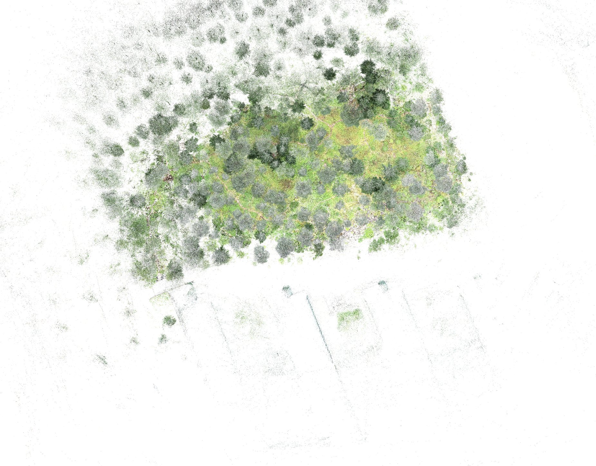
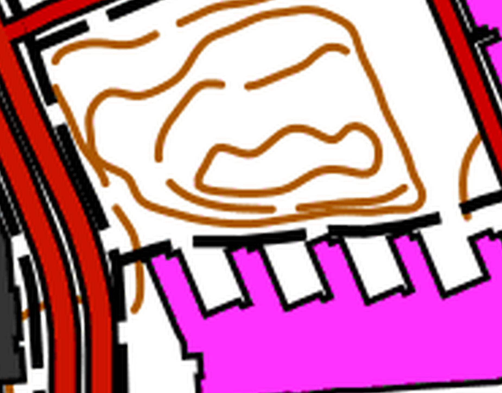
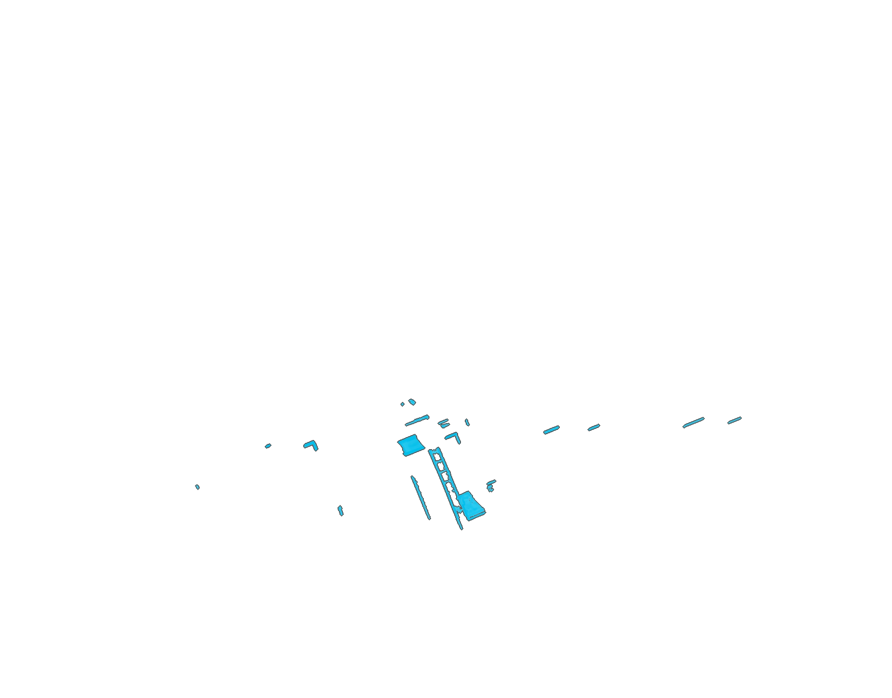
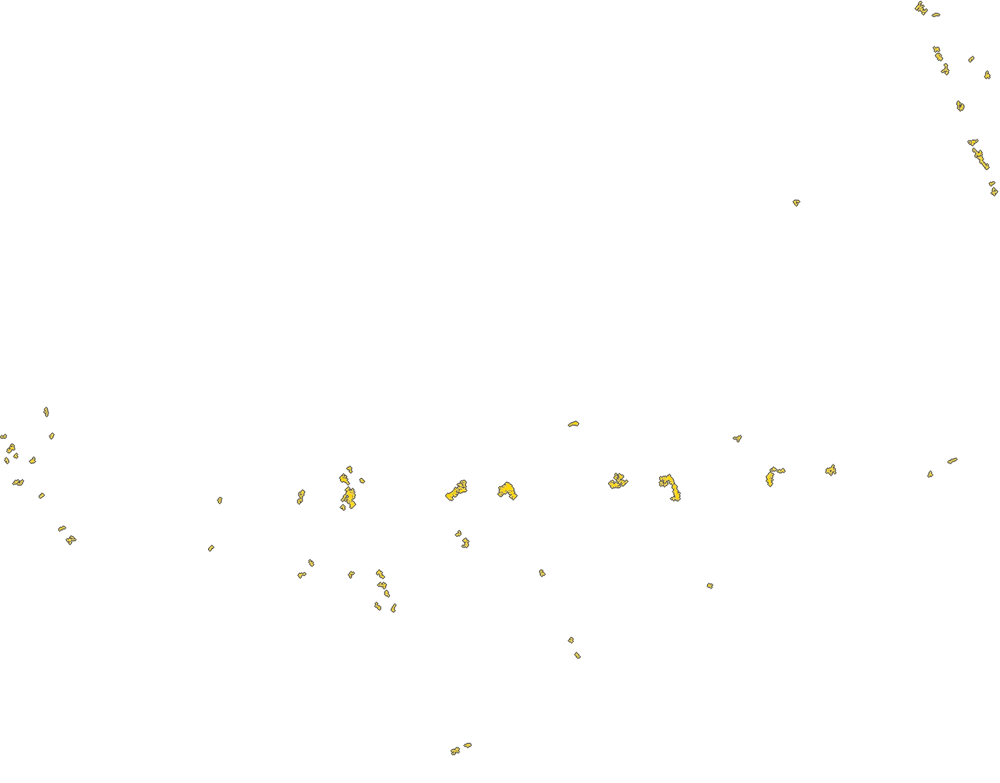
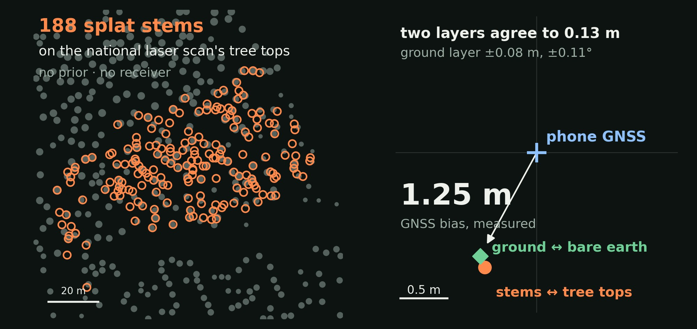
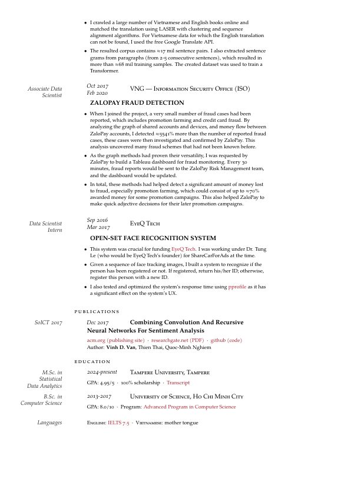

Gaussian-splat reconstructions of real forests from a consumer 360° camera alone — no LiDAR, no GNSS needed — placed on the national map, built while the scan is still running, and used as worlds for drone simulation.
A 22-minute walk with a consumer 360° camera through a forest stand on the Hervanta campus in Tampere — no LiDAR, and no GNSS needed to place it on the map. The result is a photorealistic, georeferenced model of the stand with 29.2 million Gaussians.
The model sits in the Finnish national grid. The walls the splat saw (yellow) and the walls of a LiDAR scan of the same site (cyan, reference) fall on the outline of the Tietotalo building on the National Land Survey basic map (purple).




The same stand placed with no satellite receiver in the loop: its tree stems and its ground surface were matched to the National Land Survey's free airborne laser scan. The two matches share nothing but the model and agree to 0.13 m — and both put the stand 1.25 m from where the phone's GNSS had placed it.

Left: the stand's 188 stems (orange) on the national laser scan's tree tops (grey), matched from no prior. Right: where it landed. The precisions are relative to the national scan, whose own stated planimetric accuracy is 0.6 m.
Tree stems and the ground under the vegetation, read from the splat: well-observed stems within 4–5 cm and the bare earth within 11 cm of a LiDAR survey (medians). Clips from an earlier 5.1 M-Gaussian model of the stand.
Stems identified in the splat in orange, the rest of the forest in grey.
Full video ↗The ground under the vegetation from the LiDAR survey, coloured by micro-relief and drawn inside the splat.
Full video ↗Paths, hollows and boulders show in the terrain under the trees, coloured by micro-relief.
Full video ↗A 4.4-minute walk around a mossy rock with the same consumer 360° camera. Lichen on the stone, moss, fallen birch leaves, twigs and roots stay sharp from half a metre away.
Top: ours. Bottom: Varjo Teleport. Same camera path.
We gave Varjo Teleport the same 360° video, all 264 seconds of it. Both splats fly the same camera path: ours on top, Teleport below.
PSNR on the same 363 held-out photos, people excluded. Teleport trained on every frame of the video, the held-out ones included.
An earlier capture of the same site made with the Teleport app on an iPhone 15 Pro, shown in Teleport's own viewer. It is a different recording, so it has no score on our held-out photos.
The splat trains while the scan is still running, instead of after it.
143 s around one room. 29.1 dB on held-out views 8.2 minutes after the first image. The rig and people are masked out. Replayed from the recorded log at capture speed.
A 10-minute walk from an office through a street into forest. Training starts 1 min 18 s after the first image and ends at 20.1 dB on held-out views.
The hv22 reconstruction becomes a world for drone simulation.
After a smooth curve through the forest, a 10 m/s dash clips a reconstructed tree trunk. The motors cut and the drone tumbles onto the terrain. Real physics, not an animation.
Flown 2 m above the ground at 1.8 m/s with the LiDAR map built live (right). 373 m flown, 0.22 m path error (RMSE), never closer than 0.55 m to a trunk.
A small drone decides by itself where to fly and where to look next, in a building it has never seen.
A simulated DJI Tello explores an unknown building for 10 minutes, with depth from its own camera. 56 % of the floor seen, 0 collisions.

Research assistant in the Computer Vision Group at Tampere University. Before that, a data scientist in industry: fraud detection, maps and machine translation.